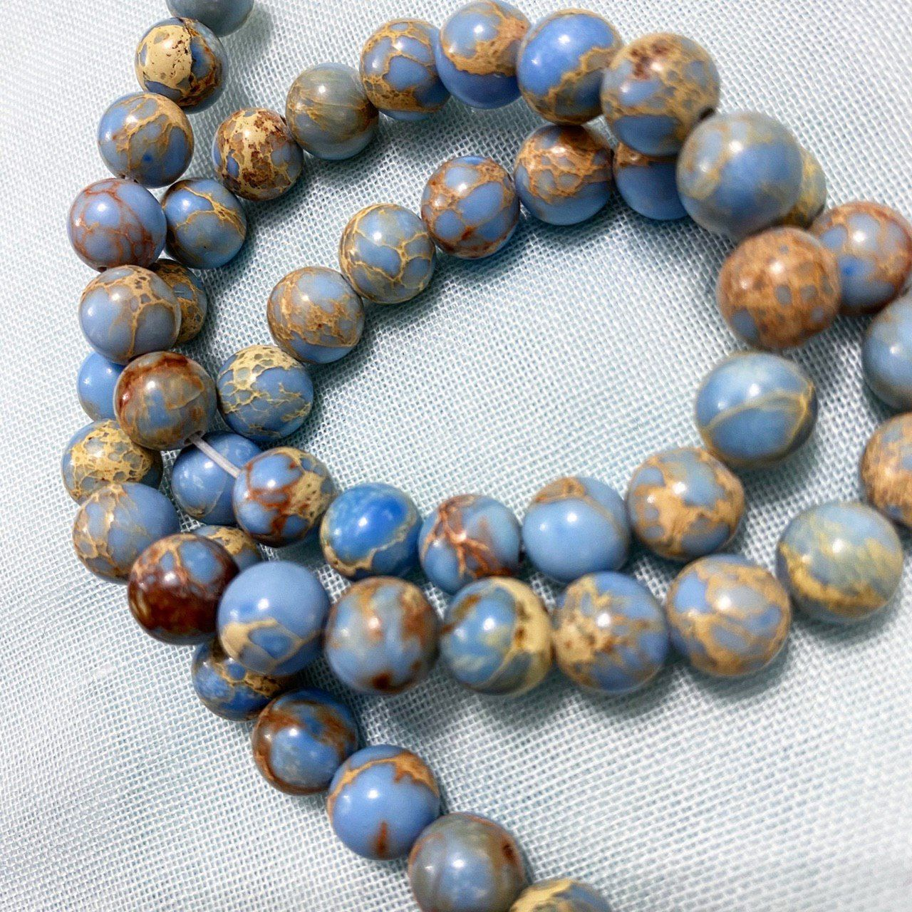
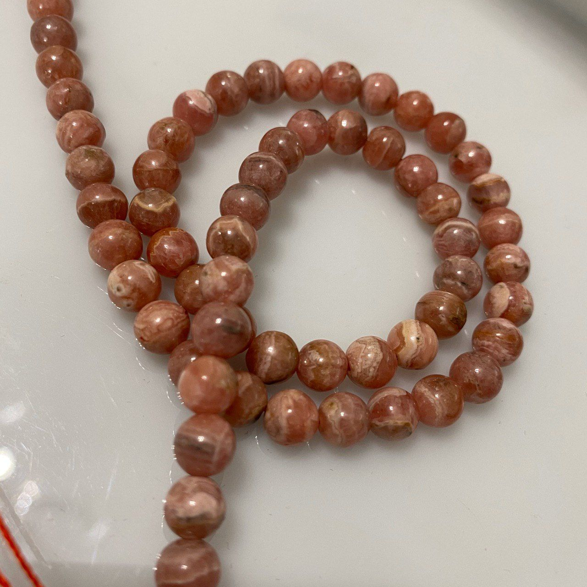
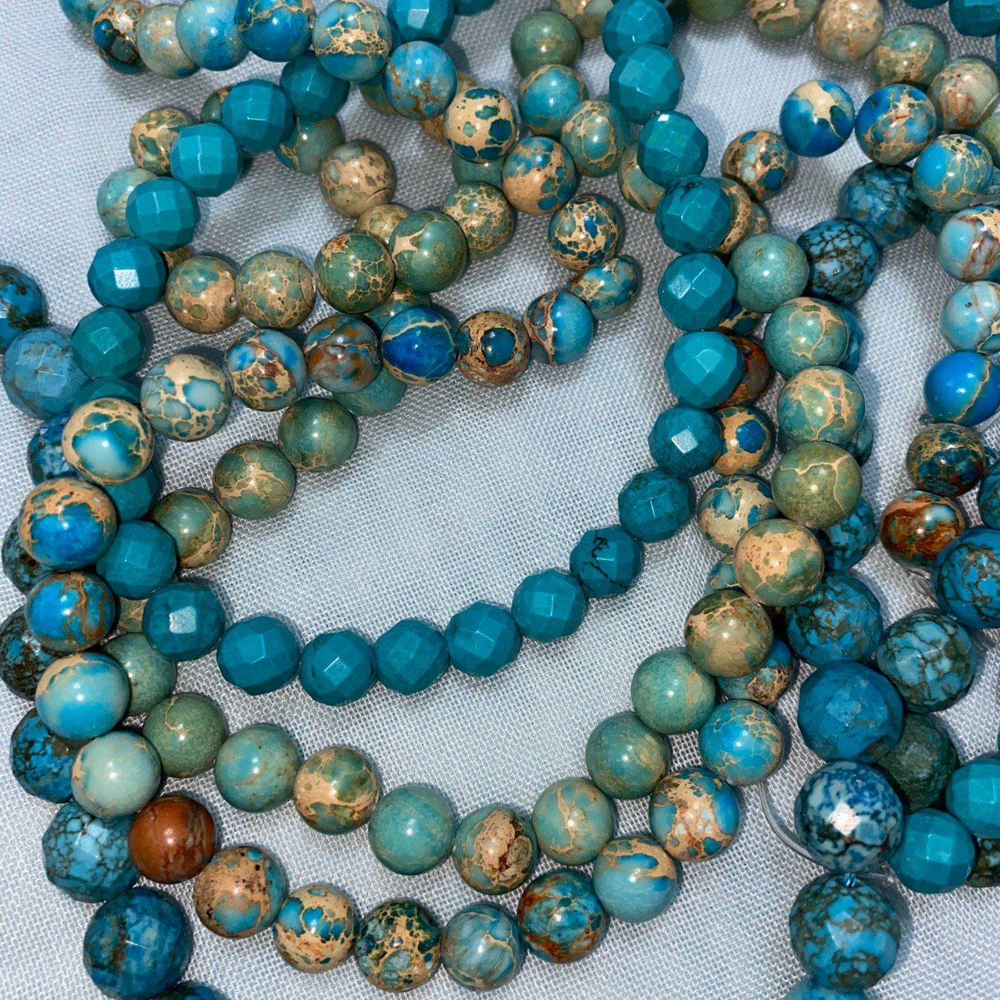
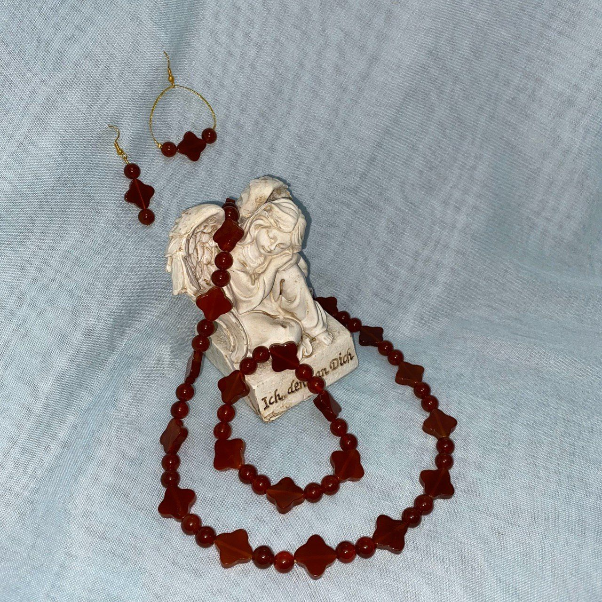
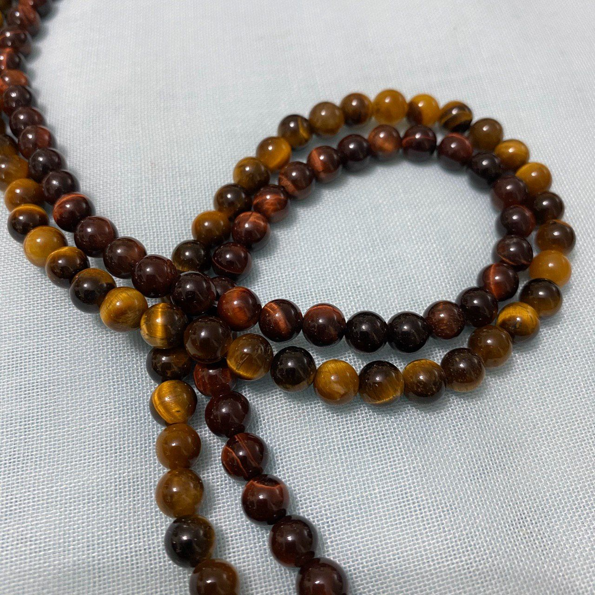

برای شروع استفاده از سنگها لازم است بدانیم که سنگها چه خواصی و ویژگیهایی دارند؟ از این طریق استفاده از آنها دقیقتر و بهتر خواهد شد.
- سنگ درمانی که از دیرباز در زمره درمانهای طبیعی بوده، امروزه تحت نام Gem Therapy به عنوان یکی از رشتههای طب مکمل معرفی و طبقهبندی میشود. استفاده از خواص درمانی سنگهای نیمهقیمتی وقیمتی، برخلاف استقبال گسترده مردم جهان طی سالهای اخیر، موضوع جدیدی نیست.
- براساس تحقیقات انجام شده از سنگهای سابیده شده و یا خرد شده میتوان نه تنها برای درمان علایم بیماریها، بلکه برای علاج دلایل عمیق بیماری هم استفاده کرد.

برای مثال مروری بر خواص چند تا از سنگهای معروف داشته باشیم:
-
فیروزه
-
خواص درمانی روانی
- تقویت بنیه
- محافظت در برابر انرژیهای منفی
- بهبود ارتباطات جمعی
-
خواص شفابخشی
- کمک به عوارض عملکردهای نادرست کبد و غدد
- تقویت چشمها
 -
خواص درمانی روانی
-

کارنلین (عقیق)
-
خواص درمانی روانی
- شادیبخش
- مقابله با افسردگی
- تقویت سیستم ایمنی بدن
-
خواص شفابخشی
- کمک به پاک کردن و تصفیه دستگاه گوارش
- تاثیرگذاری بر روی هضم و جذب غدا
- تاثیرگذاری بر گردش خون
-
خواص درمانی روانی
-
چشم ببر
-
خواص درمانی روانی
- از بین بردن احساسات ناخواسته
- ایجاد تعادل در نیازهای مادی و جسمی
-
خواص شفابخشی
- فعال کننده مراکز حرکتی در بدن از جمله استخوان و مفاصل
- تقویت کننده مراکز حرکتی در بدن از جمله استخوان و مفاصل
 -
خواص درمانی روانی
-
برای هر سنگ صفحهای تعبیه شده تا خواص آن سنگ مورد بررسی قرار گیرد.